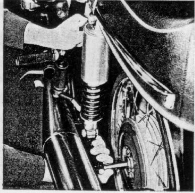
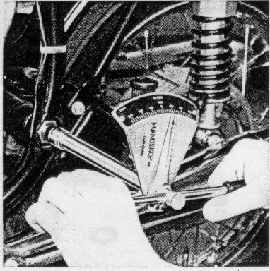
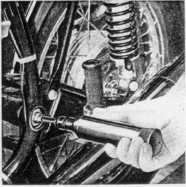

Check fit
of the rear wheel swing arm bearing every 12000 miles by pulling
the swing arm back and forth firmly,
hold on to the lifting handle with your left hand
while pulling the swing arm with your right hand.
Figure 19
19

Readjust if necessary.
To do this, remove plastic cap,
loosen lock nut with socket wrench from tool kit,
preload both bearing bolts with a socket wrench at 14.4 + 1.4 lb/ft
and loosen again, then retighten to 7.2 + 1.4 lb/ft
and secure with nut (approximately 72 lb/ft).
Figure 20
20

Grease rear wheel swing arm bearing with grease gun;
use grease gun with tapered head.
Figure 21
21
